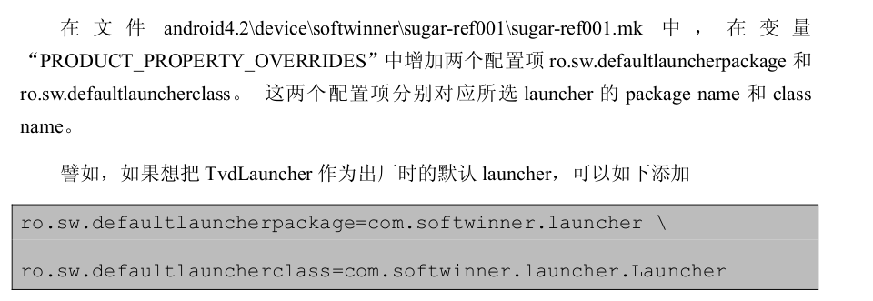
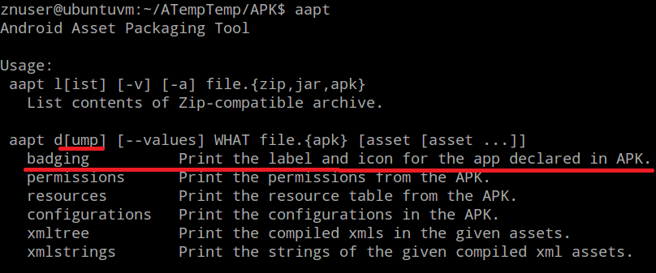
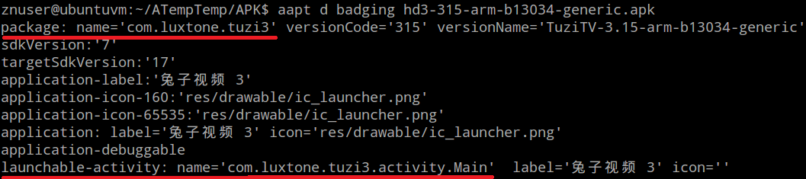
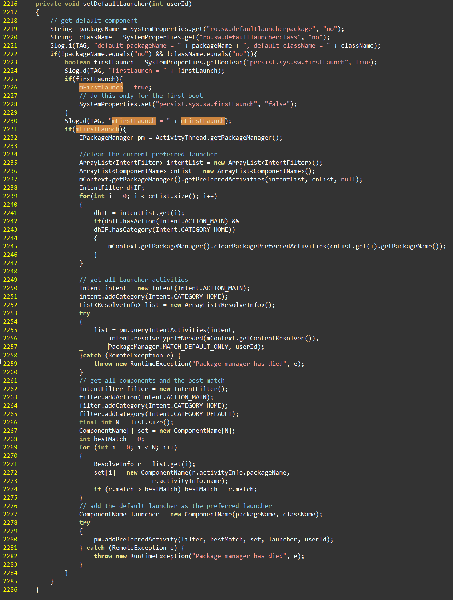

A20设定默认Launcher
None.1 问题
将ROM（A20-Homelet）的Launcher设置为“兔子视频”。即盒子启动后，直接进入兔子视频，而不是需要用户来选择：
- 进入兔子视频还是其它Launcher？
- 是Always呢还是JustOnce？
None.2 手册怎么说
随源码的手册在：
$A20_SRC/lichee/tools/tools_win/Documentations/sugar定制化说明.pdf

需要注意的地方：
- sugar-ref001工程代号，此次修改的，应该是\strikeout off\uuline off\uwave offsugar-xbh_fjb.mk\uuline default\uwave default。(代号含义不详。）
- com.softwinner.laucher及com.softwinner.laucher.Luacher，显然应该换成兔子视频的包名与类名
None.3 如何得到第三方APK包的信息
Android SDK提供了一个叫aapt（Android Asset Package Tool）的工具，与adb在同一目录下（android-sdks/platform-tools）。
None.3.1 aapt的命令

我们使用该工具的dump选项，输出badging信息。
None.3.2 使用aapt得到包信息

这样，得到了需要的包名与类名信息：
com.luxtone.tuzi3 com.luxtone.tuzi3.activity.Main
None.3.3 其它方法
必须说明，这只是众多方法的一种。如果对Android开发较熟悉，可以用原生API编程来得到包信息；或者使用一些反编译工具，直接得到AndroidManifest.xml。
None.4 不生效的处理
按照手册，到目录：
$A20_SRC/android/device/softwinner/sugar-xbh_fjb
下找到文件sugar_xbh_fjb.mk，为变量\strikeout off\uuline off\uwave offPRODUCT_PROPERTY_OVERRIDES\uuline default\uwave default增添两个选项：
ro.sw.defaultlauncherpackage=com.luxtone.tuzi3 \ ro.sw.defaultlauncherclass=com.luxtone.tuzi3.activity.Main \
重新编译、打包、烧录，启动盒子，发现却并不生效。
None.4.1 修改代码
根据从网上找的资料，在目录：
$A20_SRC/android/frameworks/base/services/java/com/android/server/am
找到文件ActivityManagerService.java。
增加如下函数：

并将此函数加入到startHomeActivityLocked()中：

一点小细节，代码中的mFirstLaunch变量，也是需要改动者自己添加的。图中未予列出。
None.4.2 A20已经做的工作
事实上，上面提到的函数，A20的源码包中已经实现。但在startHomeActivityLocked()中，对该函数的调用却又被注释掉，原因不详。因此，如果只是针对A20的开发，只需要把这句代码放开即可。不需要做额外的工作。
None.5 原理
这是一份HOW-TO的手册，关于原理不作说明。事实上也尚未研究。但从代码里看出，以下几方面应该进一步研究：
- sugar-xbh_fjb.mk中的PRODUCT_PROPERTY_OVERRIDES变量，值是如何流动的。
- 一个Launchable的APK与非Launchable的APK的区别。
- IPackageManager类提供的API及在android framework中的作用。
- 如果去掉mFirstLaunch的检验，是否可以永远去除切换到其它Launcher的可能。
None.6 总结
简洁讲，针对A20，定制默认Launcher，Step-By-Step的操作应该是：
-
为sugar-xbh_fjb.mk文件中的PRODUCT_PROPERTY_OVERRIDES变量添加两项其中，包名和类名是从兔子视频的APK包中获取的。
ro.sw.defaultlauncherpackage=com.luxtone.tuzi3 \ ro.sw.defaultlauncherclass=com.luxtone.tuzi3.activity.Main \
-
到目录中，找到ActivityManagerService.java文件，并将2299行注释放开。
$A20_SRC/android/frameworks/base/services/java/com/android/server/am